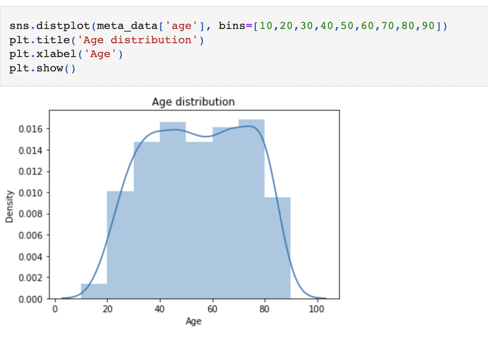
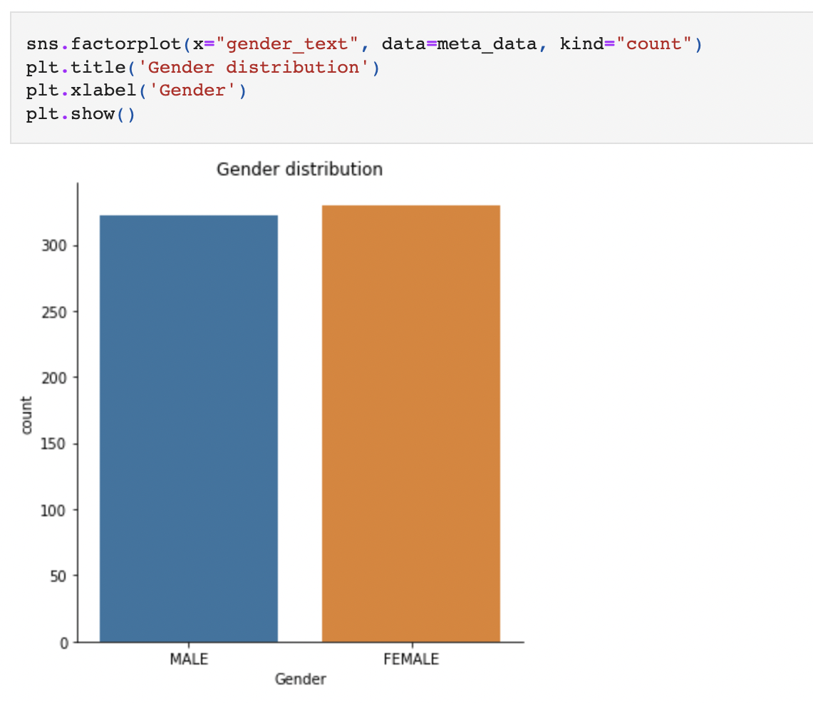

Age Regression From Brain MRI
The objective of the project is to implement volume-based Regression using brain structure segmentation. Data from 652 subjects is provided.
Predicting the age from a brain MRI scan is believed to have diagnostic value in the context of several pathologies that cause structural changes and damage to the brain. Assuming an accurate predictor of brain age can be trained based on a set of healthy subjects, the idea is then to compare the predicted age obtained on a new patient scan with the real age of that patient. The discrepancy between predicted and real age might indicate the presence of pathology and abnormal changes to the brain.
Volume-based regression using brain structure segmentation
This approach aims to regress the age of a subject from the volumes of brain tissues, including grey matter (GM), white matter (WM), and cerebrospinal fluid (CSF). It is known that with increasing age the ventricles enlarge (filled with CSF), while it is assumed that grey and white matter volume might decrease. However, as overall brain volume varies across individuals, taking the absolute volumes of tissues might not be predictive. Instead, relative volumes need to be computed as the ratios between each tissue volume and overall brain volume. To this end, a three-class brain tissue segmentation needs to be implemented and applied to the provided 652 brain scans. Brain masks are provided which have been generated with a state-of-the-art brain extraction tool from the FSL toolkit.
Different regression techniques are explored, and the best set of features for this task is investigated.
Overview of the Population
The following images provide some overview and visualization of the statistics over the population of 652 subjects.
Age Distribution:
Gender Distribution
Brain tissue segmentation
A brain tissue segmentation method that provides segmentations of GM, WM, and CSF is implemented. This method is applied to all 652 MR images, and the three tissue volumes are calculated for each subject.
Feature calculation
A function that calculates volume features given the three tissue volumes and the overall brain volume (which is calculated from the brain masks) is implemented. A big matrix with a row for each subject and features across the columns is constructed.
Age regression and cross-validation
Different regression methods from the sci-kit-learn toolkit are implemented. The output vector containing the age of each of the subjects is constructed.
The methods are evaluated using two-fold cross-validation where the dataset of 652 subjects is split into two equally sized sets (X1,y1) and (X2,y2) which are used for training and testing in an alternating way (so each set is used as (Xtrain,ytrain) and (Xtest,ytest) exactly once).
View this project on Github: https://github.com/tubakadriye/tubakadriye-age-regression-from-brain-mri